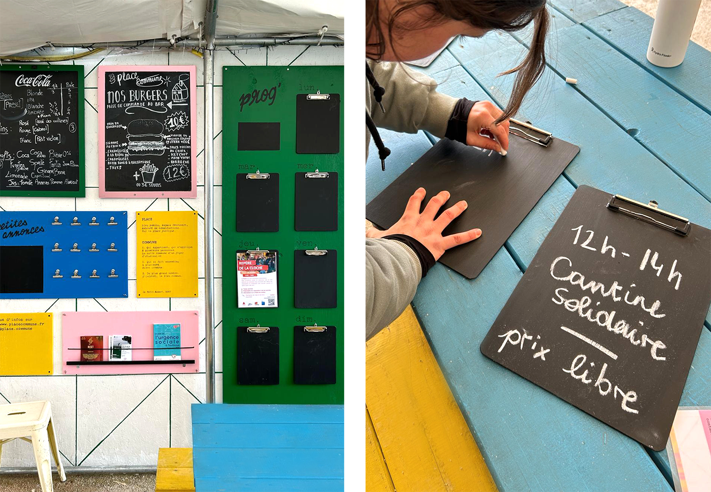
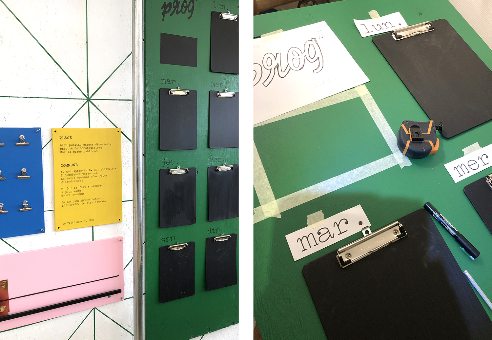
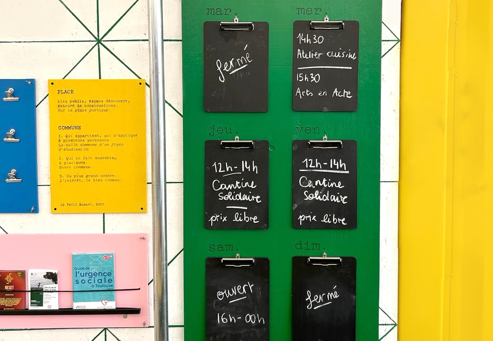
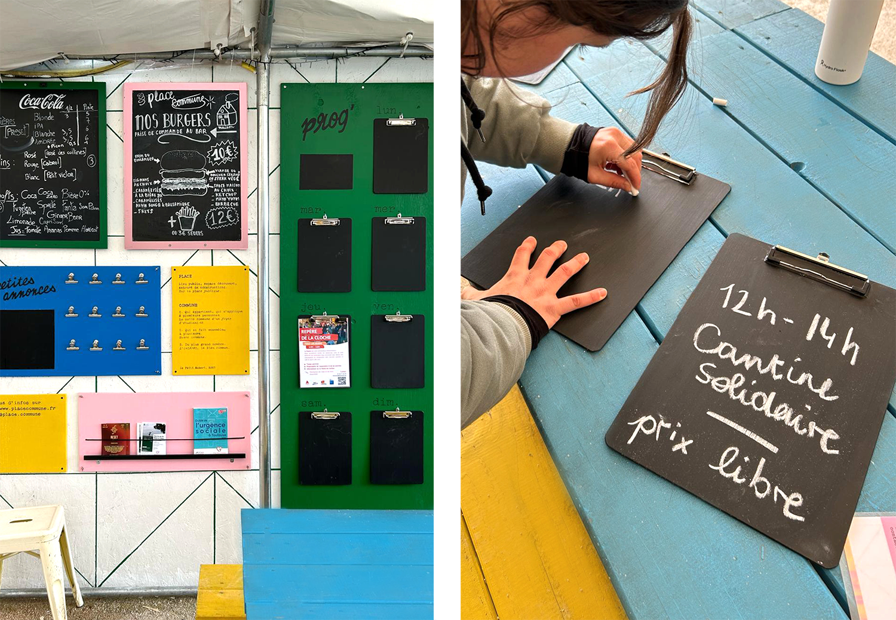
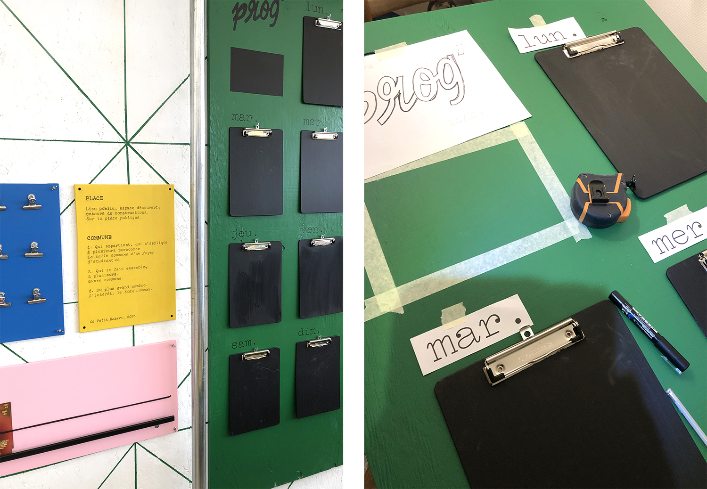
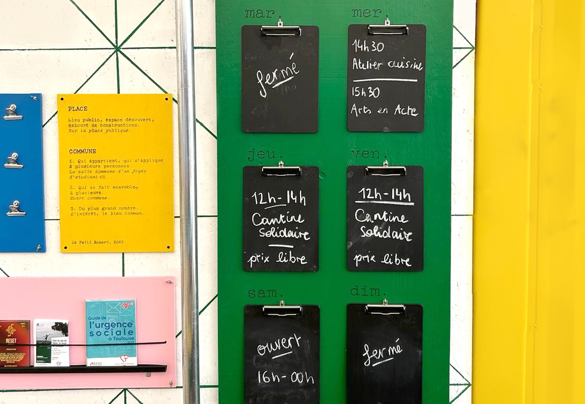

Place Commune
Conception de la signalétique de Place Commune, dans le quartier de Bonnefoy à Toulouse.
Réalisation de l'enseigne et d'un panneau "tout en un" amovible qui permet d'afficher la programmation hebdomadaire du lieu ainsi que différents éléments : menu, petites annonces, présentation, flyers et contact.
L'espace de programmation hebdomadaire a été imaginé pour écrire directement à la craie ou pour permettre d'accrocher une affiche.
La signalétique a été conçu suivant l'identité graphique, réalisée en 2023.

 




